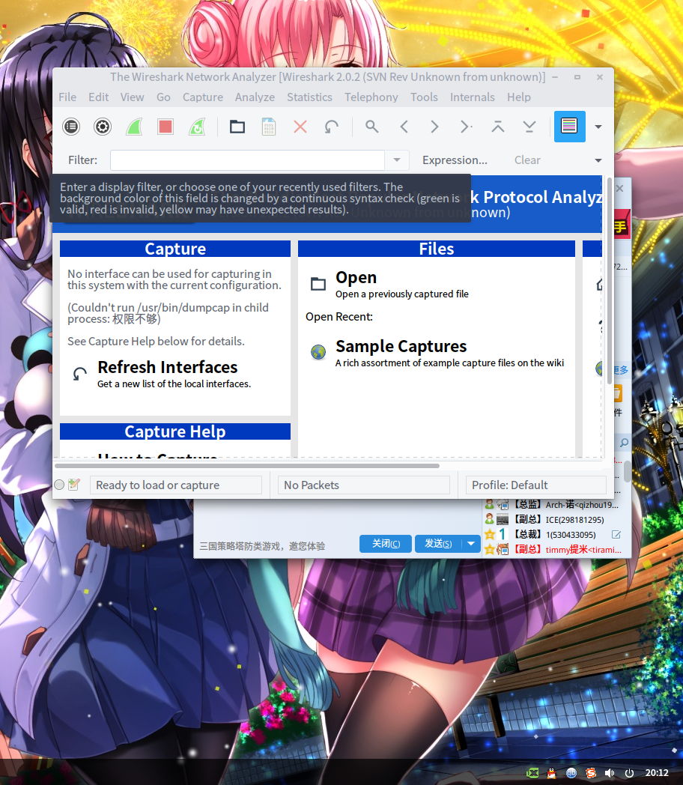

为毛百度“linux抓包分析”很多都是linux抓包，windows分析....艹 16.05.23_20:14:44由于flvcd不能解析土豆的视频了，you-get依然可以，但是给出的地址不能用，估计是referer或者user-agent的问题了 无奈之前百度过linux抓包，看到的都是在linux抓包后去windows，我去，真的不想这样折腾。 然后问了一下别人，在认真百度了一下，才发现wireshark有linux的gui版......果然是见识少啊。 在源里install了一下，sudo打开，可以了，和windows的一样用法......以后终于可以在linux愉快抓包了～～  |